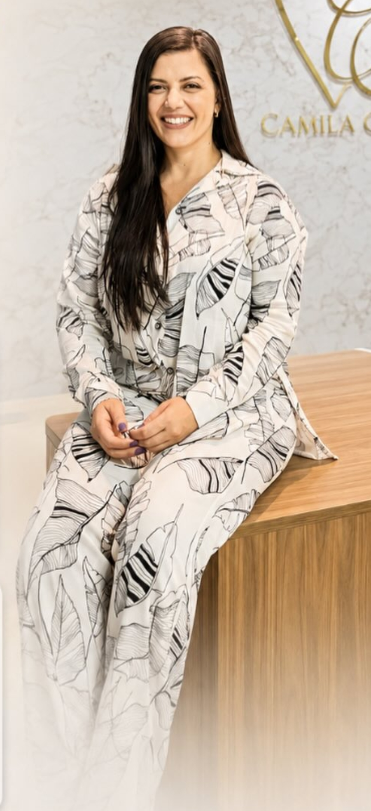

CRO-SP 96504
Tratamentos odontológicos modernos, precisos e humanizados para devolver a estética e a função mastigatória ao seu dia a dia.

Dra. Camila Caldas
CRO-SP 96504
Sou dentista formada há 18 anos pela Universidade Metropolitana de Santos. Decidi seguir a odontologia aos 14 anos e me especializei em Dentística Restauradora, com pós-graduação em Reabilitação Oral e mestrado na área.
Minha paixão pela profissão vai além da estética, pois vejo cada sorriso conquistado como uma contribuição para o bem-estar e a felicidade dos meus pacientes. Busco criar um ambiente acolhedor, onde cada pessoa se sinta valorizada e compreendida.
Técnicas avançadas e tratamentos personalizados para a sua saúde bucal.
A solução ideal para repor dentes perdidos de forma segura e duradoura. Consiste na fixação de um pino de titânio no osso, que serve como base sólida para a prótese, restaurando com perfeição a função e a estética.
Conjunto completo de tratamentos odontológicos planejados de forma personalizada para devolver a saúde bucal, a capacidade mastigatória, a fonética e a harmonia estética da face.
Com aparelhos fixos ou alinhadores invisíveis, alinhamos seus dentes para um resultado harmonioso. Previne o desgaste dentário e dificuldades na mastigação, além de facilitar a higienização.
Recuperação da estrutura dentária danificada por cáries ou fraturas. Inclui facetamento em resina ou cerâmica e clareamento dental para um sorriso naturalmente bonito e luminoso.
Restaurações de alta precisão que vão além da estética. A técnica NEDS distribui perfeitamente as forças mastigatórias, substituindo naturalmente a dentina e o esmalte e respeitando a anatomia interna original do dente.
Transparência e carinho em cada atendimento no consultório.
"Excelente profissional! Atendimento impecável, consultório super aconchegante e resultados incríveis. Recomendo de olhos fechados para quem busca um tratamento sério e humano!"
Agende a sua consulta de avaliação e venha cuidar do seu sorriso com quem entende do assunto.
(13) 97804-0770